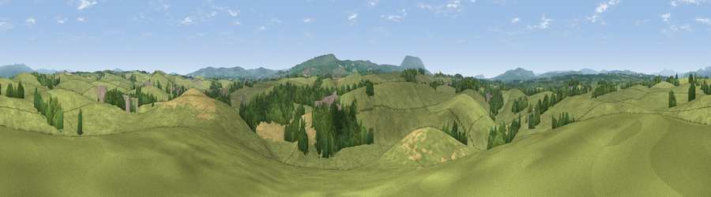

Viewpoint near Gutteridge
#23752 in England · top 59% of its area beats it · near Gutteridge · path 194 mWhere it is
The exact computed spot (SD 84625 50025). Click the marker for map links.
Public access: the nearest public right of way is about 194 m away — the final stretch may cross private land. Computed from Natural England's CRoW access layer and OpenStreetMap rights of way — not the legal definitive map. Always verify locally.
The view, rendered

A 360° render of this exact spot computed from the terrain model, tree cover and land cover — summer colours, afternoon light, calibrated against photographs of famous viewpoints. Real trees, hedges and buildings will differ in detail.
The panorama
Grey silhouette: terrain skyline in each direction (720 bearings, Earth curvature and refraction included). Dashed green: skyline with trees (+15 m) and buildings (+8 m) as obstacles. Blue strip: how far the ground is visible on each bearing.
Where the view opens
Wedge length = distance to the farthest visible ground on that bearing (vegetation-aware). Rings at 10, 25 and 50 km.
What fills the view
84% grassland · 9% woodland · 7% cropland ·
Angular shares of the visible panorama (visual magnitude), not map area. Landscape diversity 0.26 (0–1 Shannon).
Key numbers
More beautiful places nearby
The staircase of upgrades: each row has a higher view potential than everything closer. Driving times are estimates from straight-line distance, calibrated against real road routing — check an actual route before setting out.
| Place | Direction | Drive | Score |
|---|---|---|---|
| Hoober Hill | N · 1 km | ~3 min | 48.1 |
| Bomber Hill | SSW · 2 km | ~5 min | 52.0 |
| Flambers Hill | NE · 4 km | ~9 min | 61.4 |
| Weets Hill | SSE · 5 km | ~12 min | 69.3 |
| Viewpoint near Barley | SSW · 9 km | ~18 min | 76.3 |
| Pendle Hill | SSW · 10 km | ~19 min | 76.5 |
| Parlick | WSW · 25 km | ~41 min | 77.5 |
| Little Ingleborough | NNW · 26 km | ~41 min | 78.8 |
53.94610, -2.23573 · source: screening · position refined by local search. Computed location — check access rights before visiting.